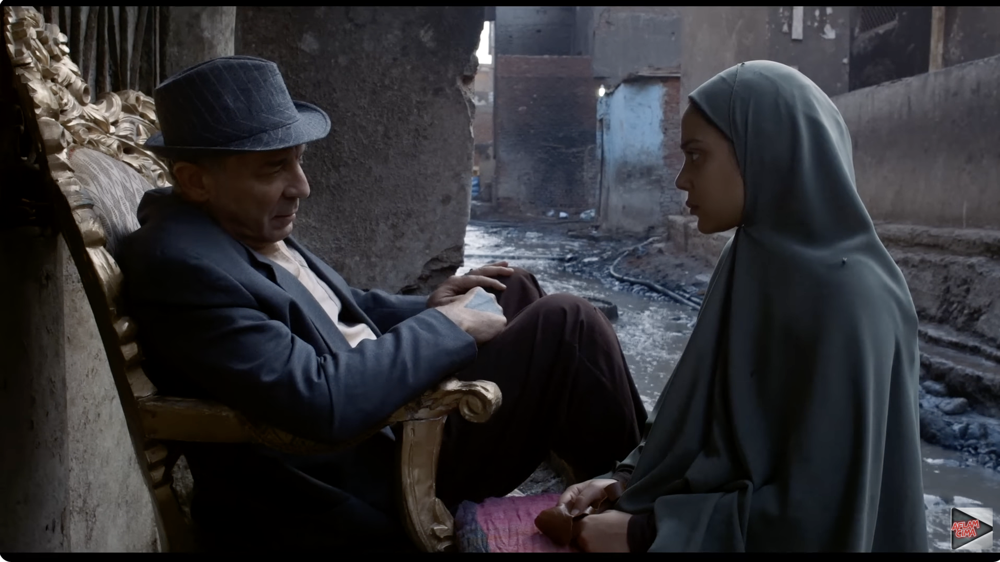
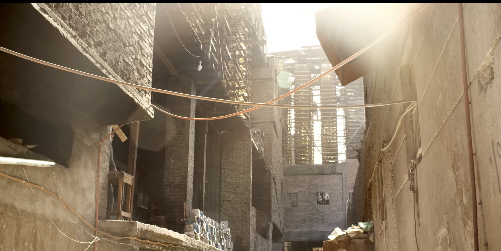
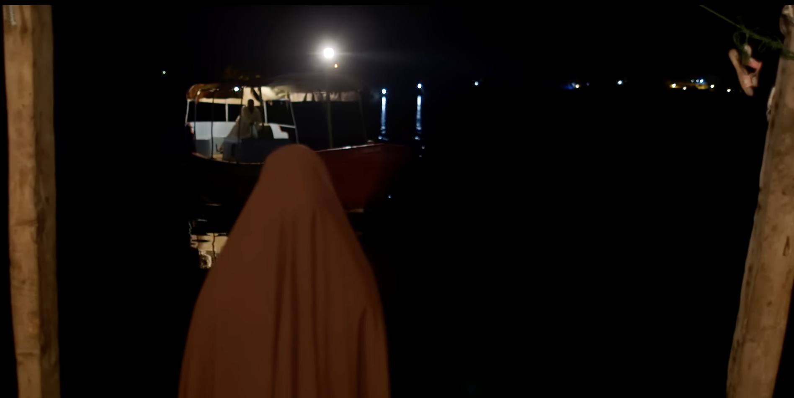

Ahmed Fawzi Saleh's Ward Masmoum (Poisonous Roses, 2018)
It is nothing short of remarkable that in a very apocalyptic moment, one fraught with authoritarianism and extreme political polarization, artists find ways to challenge us, as audiences and as human beings. Of all the artistic practices taking place in Egypt right now, cinema seems to be where the bulk of the interesting work is being done, posing important questions and opening up new ways of seeing. From groundbreaking docudramas to autobiographical musings, Egyptian cinema is trailblazing at a time when freedom of expression and creativity is profoundly suppressed.
Enter Ahmed Fawzi Saleh's debut feature film, Ward Masmoum (Poisonous Roses), winner of the best Arab film prize at this year's Cairo International Film Festival. In the film, Saleh continues his exploration of Egypt's quasi-industrial tanneries — a subject he addressed in his 2011 documentary Gild Hay (Living Skin) — this time through an adaptation of Ahmed Zaghloul al-Shiti's novel Wuroud Samma li Saqr (Poisonous Roses for Saqr, 1990). While the film does not adhere to Shiti's novel per se, it incorporates similar narrative tropes and motifs, blending fiction with the reality of the tanneries and their inhabitants.
The discipline of Nader's meandering camera is cleverly concealed by its agility in tracking the labyrinthine alleys of the tanneries. A lot can and will be written on the photography and shooting of the film, the aestheticization of the mundane and the horrid in ingenious ways. Who would have thought that towers of drying glue blocks could make for a dizzying geometric composition, creating an eerie sense of confinement while also evoking the thrill of physically going up and down the tower steps? No less impressive is the way the running wastewater that comes from processing cattle hides acts as a visual and sonic anchor to frame after frame of tableaux vivants, washed in tones of gray and blue, creating a sensory feast that is nevertheless not completely devoid of dreariness.

Still from Poisonous Roses showing the tannery environment
But the film doesn't only offer stunning visuals; it does something even more interesting. It examines a deeply problematic case of sibling fixation (a reworked incest complex that is emotionally intelligible but remains erotically unconscious throughout) against the backdrop of entrenched sexism and misogyny in Egypt's most marginalized and deprived areas. We are completely enmeshed in the brooding, weary, daily struggle of Taheya (the female protagonist, played by a stoic and sensitive Koky), and the claustrophobia of her longing for and fixation on her brother, Saqr (Ibrahim El-Nagari), as he becomes the signifier for father, husband, lover and God.
As the main provider for her family — her mother, her brother and herself — Taheya is seen mourning the death and absence of her father, witnessing the harrowing reality of married women in her own social class (spousal abuse, economic uncertainty, objectification and exploitation, etc.) and trying to deal with the agony of her deep-seated, misdirected desire for love. In her attempts to hold on to the anchor of her emotional and psychological longing, she will do whatever it takes, even if it means negotiating with the "devil." Here, the devil comes in different manifestations: it is the state, the patriarchy, and also an actual trickster, played by a charming, mischievous Mahmoud Hemeida. Taheya doesn't hesitate to sabotage her brother's romantic prospects or even his plan to illegally emigrate (going as far as to report him to the authorities). It is painful to watch at times, but so is the reality of many women in Egypt.
Taheya's desperation is not just claustrophobic; it is lonely, and Saleh brilliantly demonstrates to us, the viewers, just how lonely such a fixation can be, how empty and emptying. In all her striving, we see Taheya alone: she is alone when she goes to work, alone when she visits her father's grave, alone when she's cooking and even alone when bringing food to her brother, every day.
And maybe the consciousness of this emptiness is the only way out of her fixation: As we see in the final scene, even in her moment of joy, Taheya is alone.
Saleh, along with Nader and sound designer Sara Kaddouri, constructs parallel rhythms that accentuate each other, creating a certain hypnotic effect. When we are not engrossed in Taheya's routine of walking back and forth across the back alleys of the tanneries and crisscrossing the vast city, we are mesmerized by the rising and falling cadence of the horse carts and the machines, the industrial noise that manifests a spatial depth beyond the screen. Such aesthetic density does not aim to render what is ugly beautiful, but rather shows that seeing is an act of revealing the multilayered nature of the truth — an infinitely more difficult task.

Taheya desperately seeking her brother in Poisonous Roses
The reference to poison in the title has both a literal (tanning is a highly toxic process) and a metaphorical dimension, with the latter extending to us: the audience. We have to swallow the "poison" of witnessing the horrific injustice that women endure, and the profound inequality that enables us to retain our prized goods and sustain our indulgent levels of consumption. How often do we get to know or see which processes prop up the service sector, for example? Or what it takes, in terms of human cost, to produce the prized leather products we covet? Taheya is not alone in being poisoned by her loneliness and the oppression she faces — we, too, have to stomach the unsavory reality of poverty, injustice and marginalization endemic to our society.
Taheya could be any woman we meet on the streets of Cairo; her story is not unusual. But it is in making Taheya completely human — heroic but misguided, loving but cruel, good but capable of inflicting harm, able to see tremendous beauty in the world around her but reconciled to terrible ugliness as well — that is where Saleh's accomplishment lies. His film blends politically charged observations with deeply personal and psychological insights, all through the prism of a unique visual language that takes us to the fine line where medicine turns to poison and poison turns to medicine, reminding us that, sometimes, we need a little bit of poison to be able to see what we're too afraid to see.